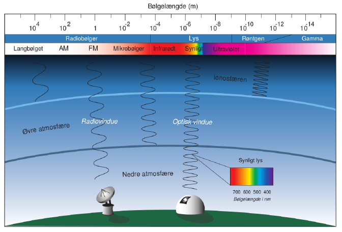
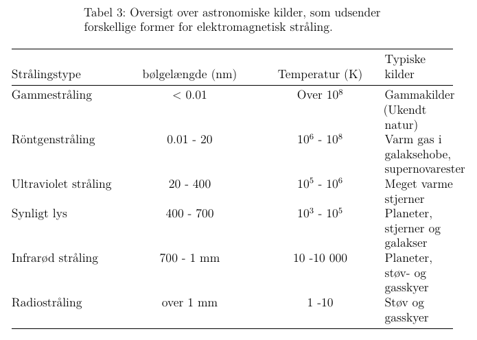
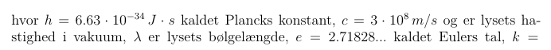
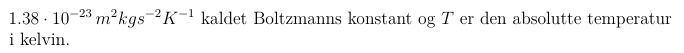
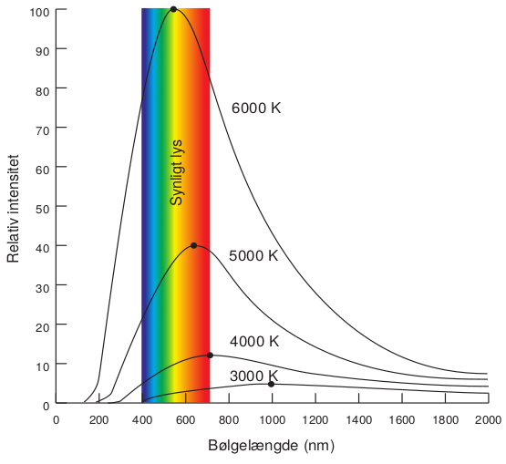
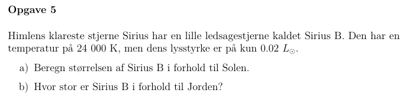
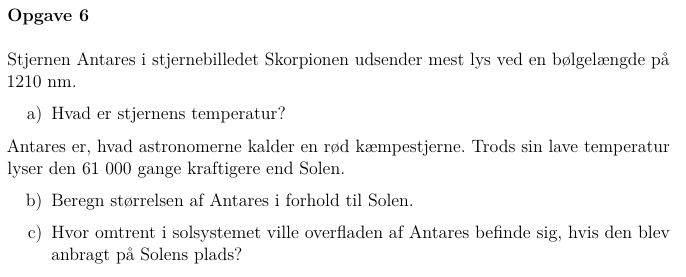
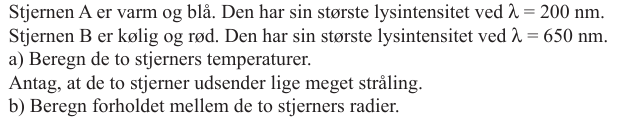
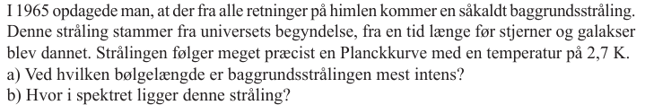
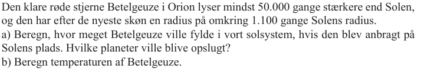

Strålingslovene
Astronomi C & Fysik B
Jacob Debel
EM spektrum

EM spektrum

Plancks lov
Sortlegemestråling.
Et sort legeme (i fysik) er i stand til at:
- absorbere alle bølgelængder og blive tilsvarende opvarmet derved.
- udsende alle bølgelængder, hvis det bliver opvarmet.
Plancks lov
Formlen (Funktion af to variable):
\[I(\lambda, T) = \frac{2 \pi h c^2}{\lambda^5 \left( e^{\frac{h c}{\lambda k T}}-1 \right)}\]


Plancks lov

https://phet.colorado.edu/sims/html/blackbody-spectrum/latest/blackbody-spectrum_da.html
Wiens forskydningslov
- Sammenhæng mellem \(\lambda_{max}\) og \(T\).
- Altså sammenhængen mellem maksimal intensitet og temperaturen.
\[\boxed{\lambda_{max} = \frac{2.989 \cdot 10^{-3} m \cdot K}{T}}\]
Wiens forskydningslov
\[\lambda_{max} = \frac{2.989 \cdot 10^{-3} m \cdot K}{T}\]

Stefan-Boltzmanns lov
- Sammenhæng mellem samlet flux og temperatur (for et sort legeme).
\[\phi = \sigma \cdot T^4\]
- \(\sigma = 5.67 \cdot 10^{-8} W m^{-2}K^{-4}\) Stefan-Boltzanns konstant.
Stefan-Boltzmanns lov
- Med flux kan man sammenligne forskellige stjerner
\[\frac{\phi_A}{\phi_B} = \left( \frac{T_A}{T_B} \right)^4\]
\[\frac{\phi_\text{Sirius}}{\phi_\odot} = \left( \frac{10000 K}{5800 K} \right)^4 = 8.84\]
- 1 \(m^2\) af Sirius' overflade udsender 8.84 gange så stor en effekt som 1 \(m^2\) på Solen.
Stefan-Boltzmanns lov
- Kan også bruges med luminositet.
\[L = A_\text{overflade} \cdot \phi = 4 \pi R^2 \cdot \sigma T^4\]
\[\boxed{\frac{L_A}{L_B} = \left( \frac{R_A}{R_B} \right)^2 \cdot \left( \frac{T_A}{T_B} \right)^4}\]
Stefan-Boltzmanns lov
- Sirius' samlede effekt er altså 25.5 gange større end Solens.
Opgaver
Opgave 5

Side 38 i stjerner.pdf
Opgave 6

Side 38 i stjerner.pdf
Ekstraopgave 1

Ekstraopgave 2

Ekstraopgave 3
